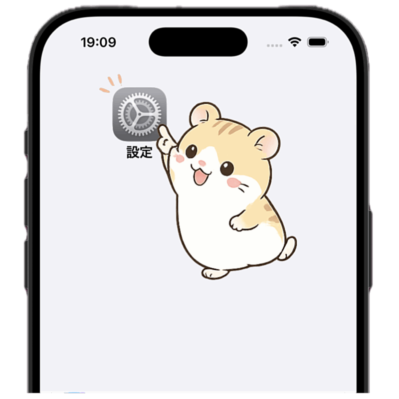
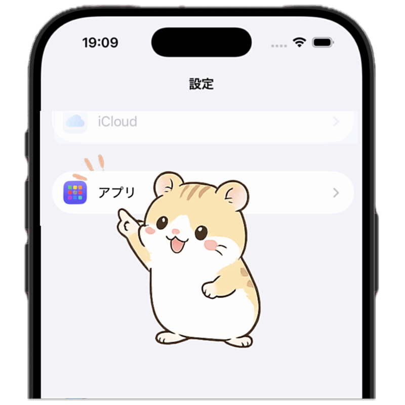
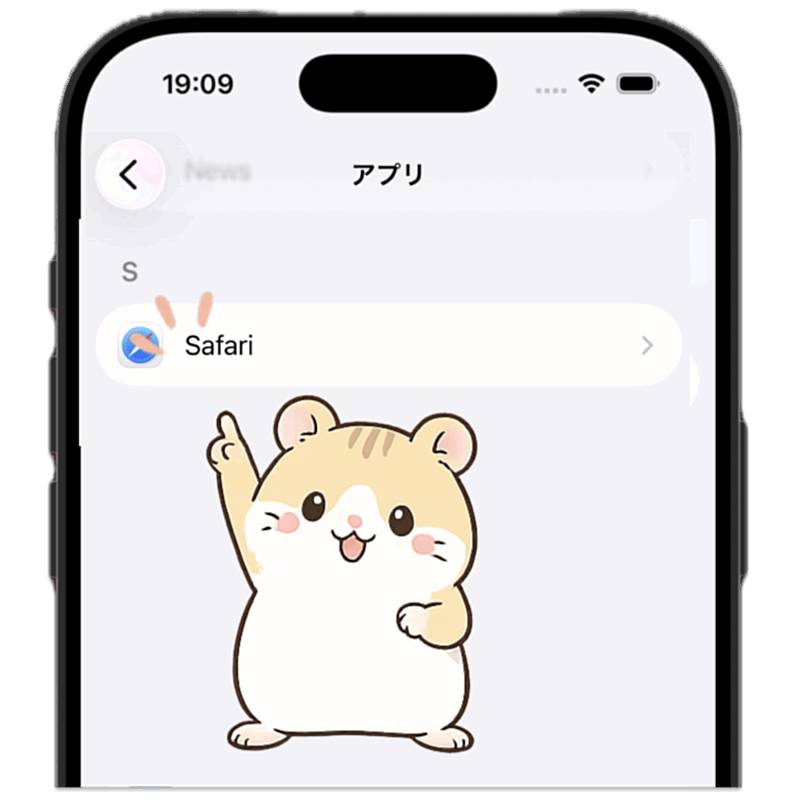
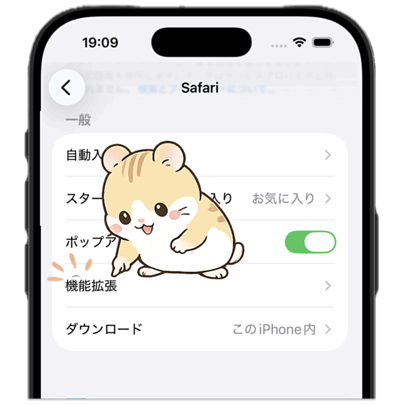
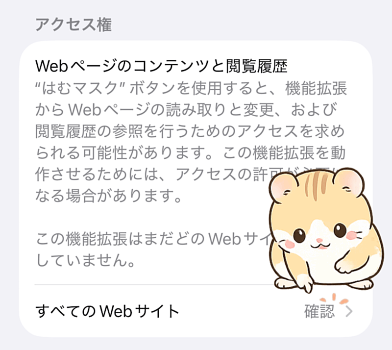
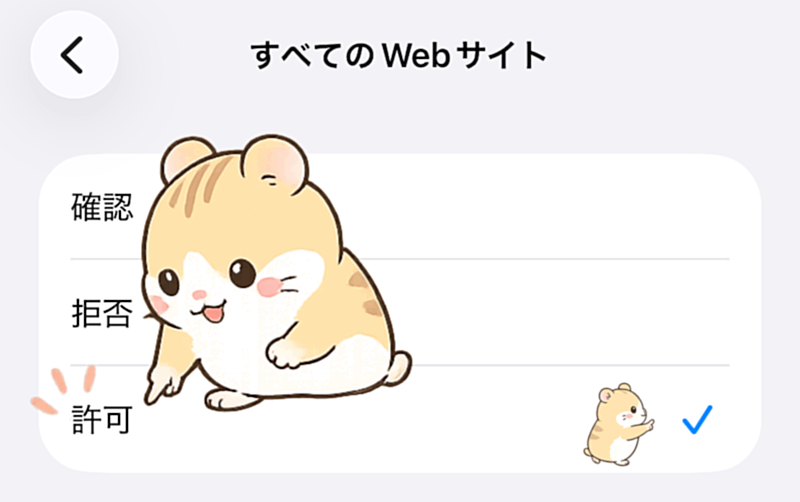

1
iPhoneの設定を開く
ホーム画面から「設定」を開きます。

iOS Safari拡張機能「はむマスク」の設定方法、困ったときの確認事項、不具合報告方法をまとめています。

はむマスクは、iOS Safariに表示される広告候補領域を検出し、かわいいハムスター画像で視覚的にマスクするSafari拡張機能です。
この拡張機能は、通信を遮断する広告ブロッカーではありません。ページ上に表示された広告候補領域を視覚的にマスクします。
iOSの仕様上、アプリをインストールしただけではSafari側で自動有効化されません。以下の流れで、はむマスクとWebサイトへのアクセスを許可してください。

ホーム画面から「設定」を開きます。

設定の中にある「アプリ」をタップします。

アプリ一覧から「Safari」をタップします。

Safariの設定にある「機能拡張」をタップします。
機能拡張の一覧から「はむマスク」をタップします。
はむマスクの設定で「拡張機能を許可」と「プライベートブラウズで許可」をオンにします。

アクセス権設定にある「すべてのWebサイト」をタップします。

デフォルトでは「確認」になっているため、「許可」をタップします。
期待通りに動かない場合は、以下を確認してください。
サイト構造や広告配信方法によって、すべての広告候補を検出できない場合があります。
必要に応じて、はむマスクの設定で「プライベートブラウズで許可」もオンにしてください。
不具合、誤検出、マスクされない広告候補がある場合は、GitHub Issuesで報告してください。
はむマスクは、広告候補を判定するために閲覧中のWebページのDOM構造、要素の属性、URL、表示サイズ、表示位置などをブラウザ内で参照します。